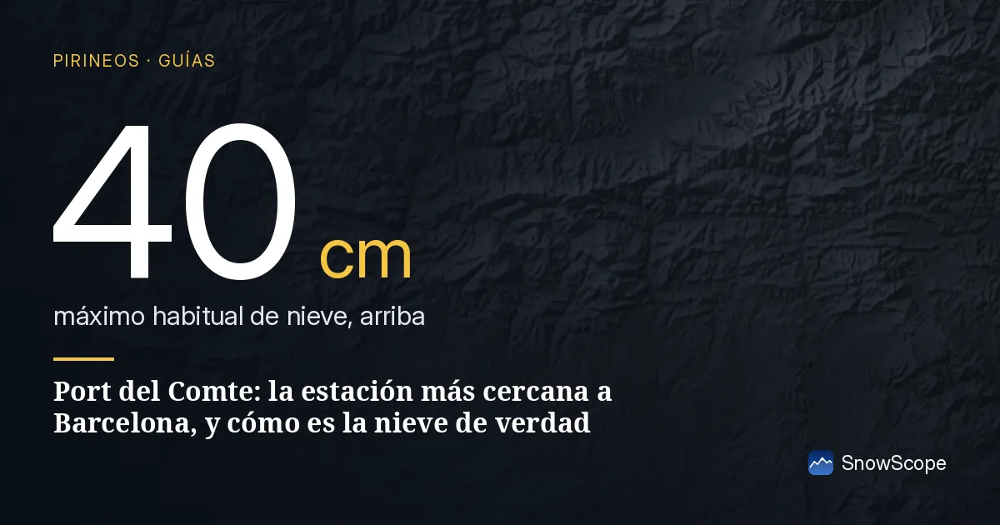
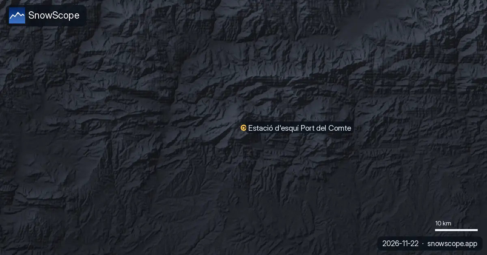

Port del Comte: la estación más cercana a Barcelona, y cómo es la nieve de verdad
Port del Comte es la estación de esquí a la que llegan primero muchas familias de Barcelona: una corta conducción hacia arriba desde Solsona hasta una meseta entre 1744 m y 2122 m, con 27 km de pistas marcadas en 13 remontes. Es una montaña prepirenáica, no una montaña alta, y la historia de 46 inviernos anteriores muestra lo que eso significa: la nieve natural es fina, la temporada es corta, y la producción de nieve es lo que mantiene las pistas abiertas.
Consulta la previsión de nieve en tiempo real de Estació d'esquí Port del Comte en la app SnowScopeEspesor de nieve, alertas de nieve polvo y mapa 3D, gratis.

La nieve llega tarde y se va pronto
La base a 1744 m registra su máximo usual en invierno de 26 cm; media montaña (1933 m) alcanza 33 cm; la cima (2122 m) llega a 40 cm. Son cifras bajas según los estándares alpinos, y revelan la naturaleza de esta meseta prepirenáica. El invierno más pobre del registro dejó solo 10 cm a media montaña; el más rico alcanzó 62 cm. El invierno pasado (2025–26) alcanzó un máximo de 50 cm allí, muy por encima del promedio.
La primera nieve natural se asienta a media montaña el 27 de noviembre en la mitad de los inviernos. Para el 13 de abril ha desaparecido de nuevo en la mitad de los inviernos. Esto deja solo alrededor de cinco meses en los que la nieve yace naturalmente en el terreno. Las noches frías importan más que las nevadas frescas aquí, porque la producción de nieve llena los huecos entre tormentas.
Diciembre es fino; enero y febrero son la temporada
En un diciembre usual, media montaña recibe 4 cm de nieve natural; enero aporta 8 cm y febrero 11 cm. Estos totales mensuales son la base sobre la que construyen los preparadores. Febrero es el mes más profundo en todas las altitudes. Un febrero generoso puede alcanzar 36 cm a media montaña y 45 cm en la cima.
La mejor semana es la semana ISO 6, a principios de febrero, con un usual de 14 cm a media montaña. Es entonces cuando las tormentas del Atlántico han entregado lo que van a entregar, y antes de que el sol comience a trabajar. Después de que una tormenta mediterránea empuje contra estos Prepirineos, los días que siguen son tu ventana para conducir hacia arriba: la nieve yace fresca, las pistas están preparadas, y la cobertura natural está en su máxima profundidad.
La altitud marca una diferencia, pero no grande
Entre la base y la cima, solo 40 cm separan un máximo usual. En la base un enero usual tiene 6 cm; en la cima 10 cm. En la base febrero son 8 cm; en la cima 13 cm. Este rango vertical modesto significa que la nieve de principios de temporada es fina en todas partes y que el deshielo primaveral alcanza todas las altitudes en aproximadamente el mismo momento.
La cima (2122 m) ofrece una ligera ventaja: se mantiene blanca un poco más hacia abril y marzo, y se beneficia más de las raramente abundantes nevadas. Durante 46 inviernos, la cima ha alcanzado un máximo de 72 cm mientras que la base se ha quedado en 7 cm en un año pobre. Pero la diferencia no es tan grande como para hacer que las pistas superiores sean una apuesta segura cuando la base está despejada.
Lo que el rango te dice
A media montaña, uno de cada diez inviernos ha registrado 36 cm o más al final de febrero; nueve de cada diez se han quedado muy por debajo. El máximo de toda la temporada a media montaña ha oscilado entre 10 cm en el año más pobre y 62 cm en el más rico, alrededor de un usual de 33 cm. En la cima el rango va de 11 a 72 cm alrededor de 40 cm. Esta variabilidad es la naturaleza de las tormentas mediterráneas e influencia del Atlántico mezcladas en una montaña baja.
La nieve yace en el terreno a media montaña durante 77 días en un invierno usual. Esta persistencia es por qué la infraestructura de preparación importa tanto: mantiene las pistas abiertas entre tormentas y construye profundidad a partir de las modestas caídas naturales. Los primeros 15 inviernos del registro vieron un máximo de 34 cm a media montaña; los 15 inviernos más recientes han promediado 30 cm. La montaña no ha cambiado mucho, porque no había mucho que perder.
Cómo planificar tu temporada
Reserva enero o febrero, idealmente los días después de una tormenta pronosticada. Diciembre es un mes de bonificación, no uno confiable. Marzo puede tener pistas esquiables en la cima, pero la base comienza a mostrar tierra. Abril ha terminado.
Espera pistas preparadas hechas a máquina. La cobertura natural es la base, no el destino. Tus días aquí funcionan mejor como una corta conducción desde Barcelona cuando las condiciones son adecuadas, no como un viaje de una semana independiente. Para nieve profunda confiable durante toda la temporada, las estaciones pirenaicas más altas en la Vall d'Aran o la Cerdanya son el siguiente paso hacia arriba de la montaña.
Profundidad de nieve por mes en tres altitudes
Diciembre: 3 cm en la base, 4 cm a media montaña, 5 cm en la cima (año usual). Enero: 6 cm, 8 cm, 10 cm. Febrero: 8 cm, 11 cm, 13 cm. Marzo: 2 cm, 3 cm, 4 cm. Abril: 0 cm en todas las altitudes.
Estas son las medianas de 46 inviernos. En un buen año, febrero en la cima puede duplicar estas cifras. En un año pobre, la base puede no pasar nunca de dígitos simples. Las estimaciones de profundidad de nieve corresponden a la zona durante inviernos pasados y describen lo que se acumula de caída natural; las pistas abiertas dependen de la preparación y producción de nieve de la estación cada temporada. Para condiciones actuales y consejo de avalanchas oficial, consulta el boletín de ICGC.
Consejos para esquiadores
- Conduce hacia arriba en los días después de que una tormenta mediterránea atraviese la zona, idealmente en enero o febrero, cuando la nieve natural está fresca y los preparadores han trabajado.
- Lleva capas: el sol es fuerte aquí a esta latitud y altitud, pero las noches son frías y el viento puede barrer la meseta expuesta. El principio de la mañana es usualmente más tranquilo que la tarde.
- Planifica Port del Comte como un viaje corto desde Barcelona cuando las condiciones se alineen, no como tus principales vacaciones invernales. Usa la app SnowScope para rastrear cuándo llegan las tormentas.
- Para esquí fuera de pista o backcountry, consulta el boletín de avalanchas oficial de ICGC antes de ir.
- Si necesitas nieve más profunda y confiable durante una semana completa, los valles pirenaicos más altos (Vall d'Aran, Cerdanya) ofrecen mejores probabilidades, aunque están más lejos para conducir.
Sobre estas cifras
Los espesores de nieve de las estaciones son la nieve más profunda en las pistas altas en la fecha indicada; son estimaciones para una zona, no una medida en un punto. Las previsiones pueden cambiar. Consulta siempre el boletín oficial de aludes antes de salir fuera de pista.
Boletines oficiales de aludes: ICGC – Butlletí de perill d'allaus (Catalunya)
Citar este informe
Para investigación, docencia o prensa: cifras y gráficos reutilizables libremente bajo CC BY 4.0 con esta cita.
SnowScope (2026), Port del Comte: la estación más cercana a Barcelona, y cómo es la nieve de verdad, https://snowscope.app/blog/es/2026/11/port-del-comte-snow-altitude-guide-nearest-ski-to-barcelona.html, consultado el 2026-11-22
SnowScope (Atlas Labs). (2026, November 22). Port del Comte: la estación más cercana a Barcelona, y cómo es la nieve de verdad. SnowScope snow reports. https://snowscope.app/blog/es/2026/11/port-del-comte-snow-altitude-guide-nearest-ski-to-barcelona.html
BibTeX
@misc{snowscope2026portdelcomtesnowaltitude,
author = {{SnowScope (Atlas Labs)}},
title = {Port del Comte: la estación más cercana a Barcelona, y cómo es la nieve de verdad},
year = {2026},
month = nov,
howpublished = {\url{https://snowscope.app/blog/es/2026/11/port-del-comte-snow-altitude-guide-nearest-ski-to-barcelona.html}},
note = {Published 2026-11-22 11:19 UTC; accessed 2026-11-22}
}· CC BY 4.0 · Métodos, datos y herramientas →
Sigue Estació d'esquí Port del Comte
Gratis: un aviso cuando llega la nieve y la previsión cada mañana.